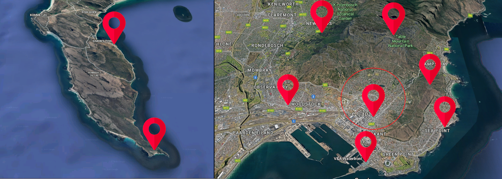

Currently in semester abroad, this section is intended to share with you my experiences, my discoveries and my meetings in this country.
As I am studying at CPUT Cape Town University, I was mainly brought to visit places in or near Cape Town, which is why this section will not talk about other parts of South Africa.
Finally, it is important to note that this trip took place before then during the covid-19 epidemic, which is why I unfortunately could not go on safaris or road trip during this travel and that I had to return to France earlier than expected.
Below, you can find a map of the Cape Point (at the left) and a map of Cape Town (at the right).
Click on the differents pins to be redirected on the areas that you have choose.

Map of Cape Point and Cape Town
Here a table of distance between the different citys.